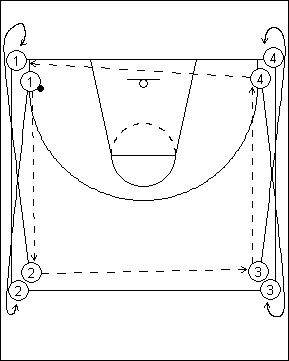

Catégorie : PASSES (Pas-006)
Déroulement
- Quatre files de joueurs aux quatre coins d’un demi-terrain. Un seul ballon dans la file 1.
- Le premier joueur de la file 1 passe au premier joueur de la file 2, qui transmet au premier joueur de la file 3, qui prolonge vers le premier joueur de la file 4, qui passe au deuxième joueur de la file 1, et ainsi de suite.
- Après sa passe au premier joueur de la file 2, 1 va dans cette file. Après sa passe à 3, 2 va dans la file 1. Après la passe à 4, 3 va dans la file 4 et après sa passe au deuxième joueur 1, le joueur 4 va dans la file 3.
- Donc 1 et 2 sont toujours dans les mêmes files; idem pour 3 et 4.
Coaching points
- Insister sur la précision et la vitesse des passes. Tous les joueurs doivent pratiquement toujours être en mouvement.
- Avec au minimum 12 joueurs, on peut introduire un deuxième ballon.